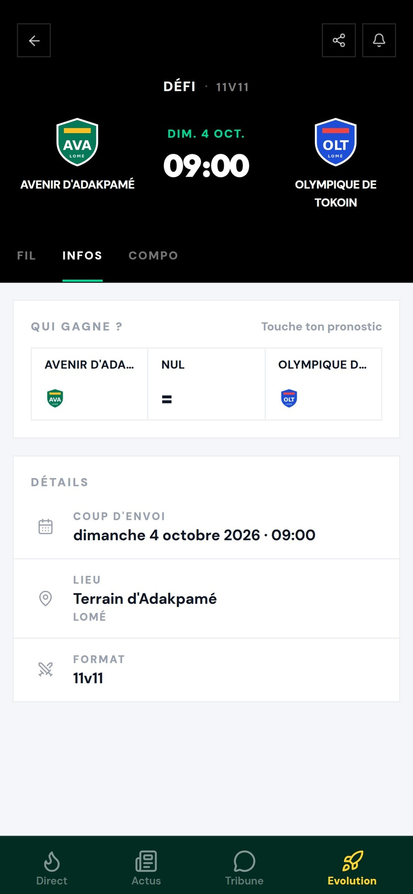
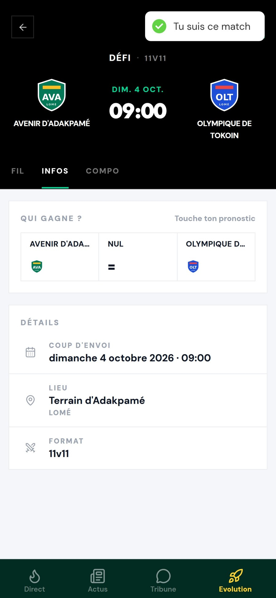
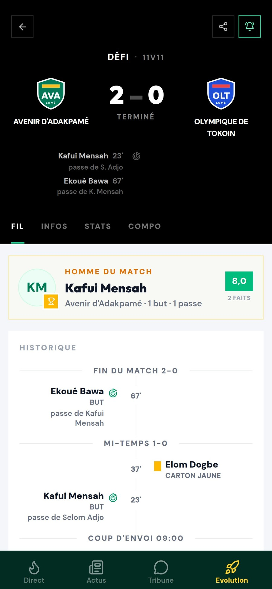
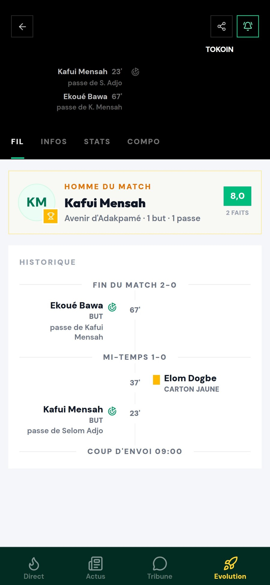

Plan réel
Ton équipe
joue.
Mais tu n'es
pas au stade.
⚽
Supporters de l'AvenirYao, Afi, Kodjo, Mawuli, toi
Y
Yao
Le match a commencé ?
A
Afi
C'est combien ?
K
Kodjo
Qui a marqué ??
M
Mawuli
Quelqu'un est au terrain ? 😩
Y
2 – 0 ! Kafui à la 23e,
Ekoué à la 67e 🔥
Ekoué à la 67e 🔥
Y
Yao
T'es au terrain ??
Non. Je le suis
sur KoppaFoot 😎
sur KoppaFoot 😎
Et si tu pouvais
suivre ton match…
même à distance ?
Sur KoppaFoot
Suis ton
match
Ouvre sa fiche, touche la cloche.
Même à distance
Le match
vient à toi
Chaque but arrive sur ton téléphone.
Sur la fiche du match
À la minute
près
Buts, cartons, mi-temps : tout le fil.


dimanche 4 octobre
8:59


Le foot amateur
mérite aussi
d'être suivi.
Le foot amateur
en temps réel.
Suis le prochain match
koppafoot.com
Lien en description